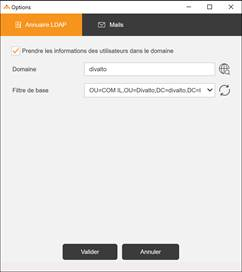

Accueil | DLMT - Gestion des licences nommées | Divalto Licences Management Tool (DLMT) | Option Annuaire LDAP

Si les utilisateurs de l’ERP sont référencés dans un annuaire LDAP (par exemple l’Active Directory de Microsoft) et que l’on souhaite soit une saisie assistée des associations, soit importer directement les associations depuis l’annuaire, il faut configurer l’accès à l’annuaire dans les options de DLMT.
Il convient de cocher la case pour activer l’option puis d’indiquer le nom du domaine. Le bouton en regard du champ Domaine permet de détecter le domaine courant.
Le champ « Filtre de base » permet de restreindre l’accès à l’annuaire pour une Unité organisationnelle (O.U. : Organizational Unit). Le bouton en regard de ce champ garnit les O.U. existantes dans la boîte de sélection.